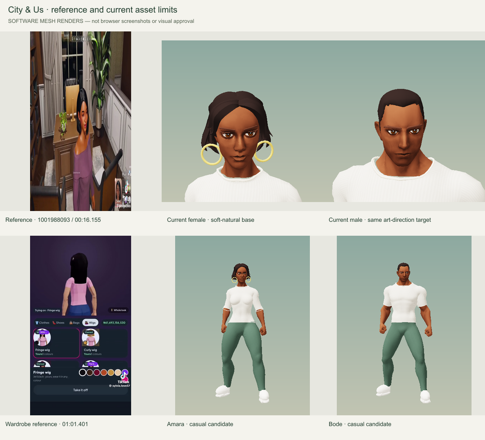
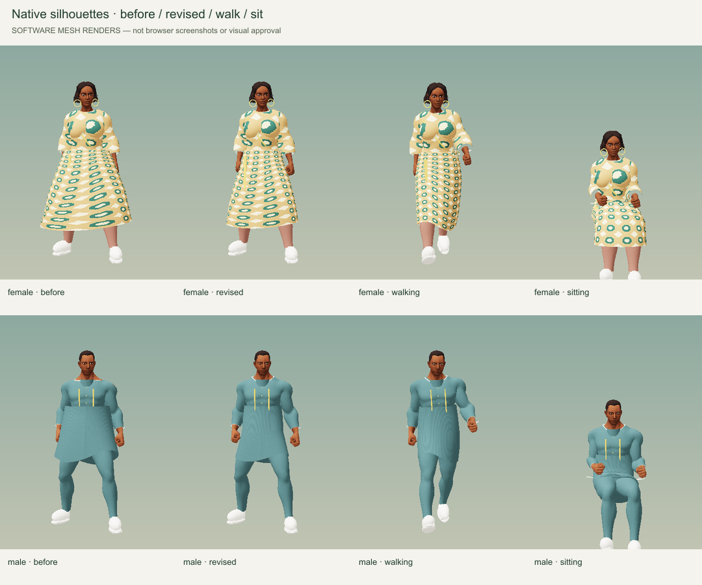
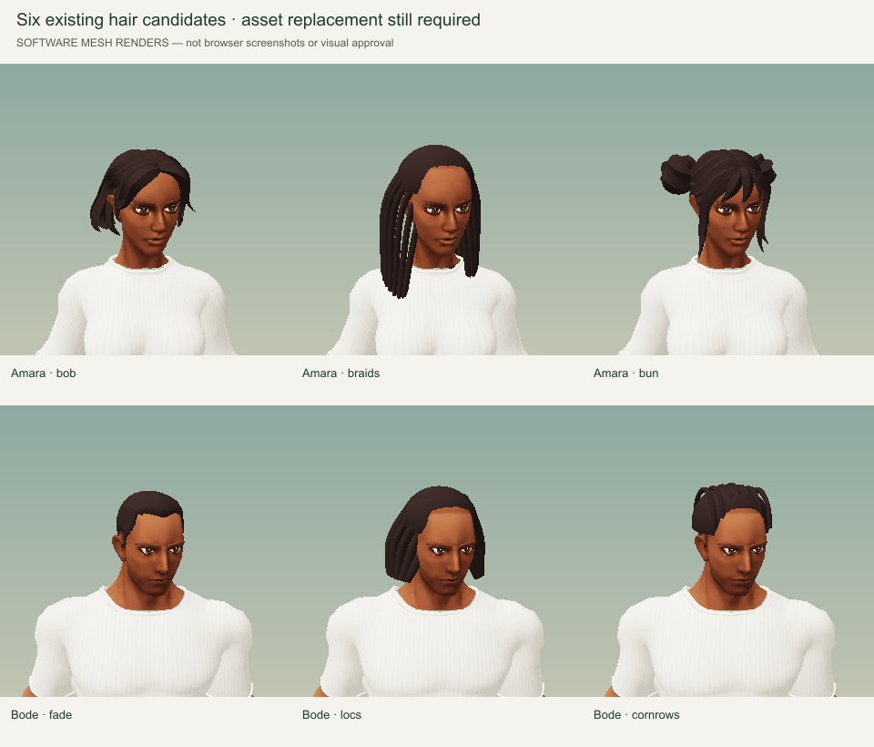
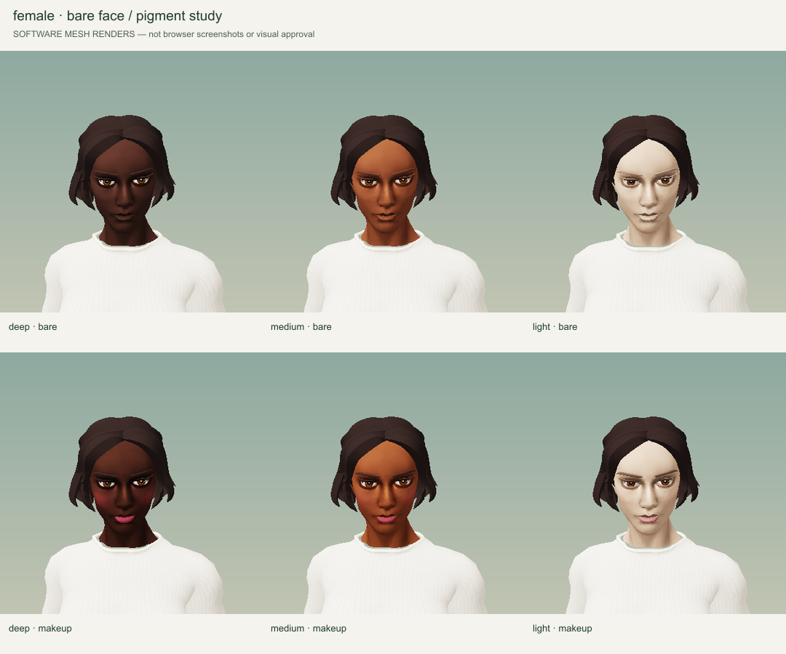
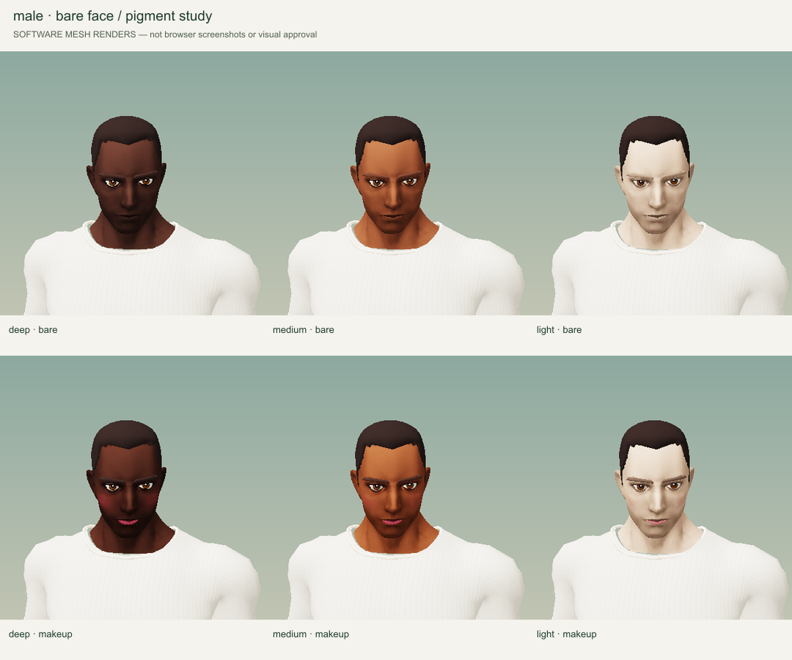

Visual quality is not accepted. These are software renders from actual meshes, beside supplied reference frames. No live browser screenshot, Android measurement or new natural-character asset is claimed.
Open interactive study · Completion report · Free asset proposal
The female face in 1001988093 at 16.155 seconds is the primary natural-face direction. The male uses that overall direction, not a claimed matching male reference. The old base still has sharp brows/jaw and painted skin. The second supplied frame is wardrobe interaction guidance, not a character-quality target.

The revised iro and senator reduce width/depth. Cloth remains approximate and body-derived, with visible torso/hem limitations. Other gowns remain unresolved.

Six existing silhouettes, not six newly authored or approved textured hairstyles. Opaque shells and procedural strands still need replacement.

Same fixed software lighting and pose. Bare above, pigment study below. Pigment remains attached through the face UV map; lashes and expression are not delivered.

Deep, medium and lighter examples. Makeup study: brows .6, liner .5, lipstick .55, blush .35. Software lighting does not reproduce browser normals/shadows.
